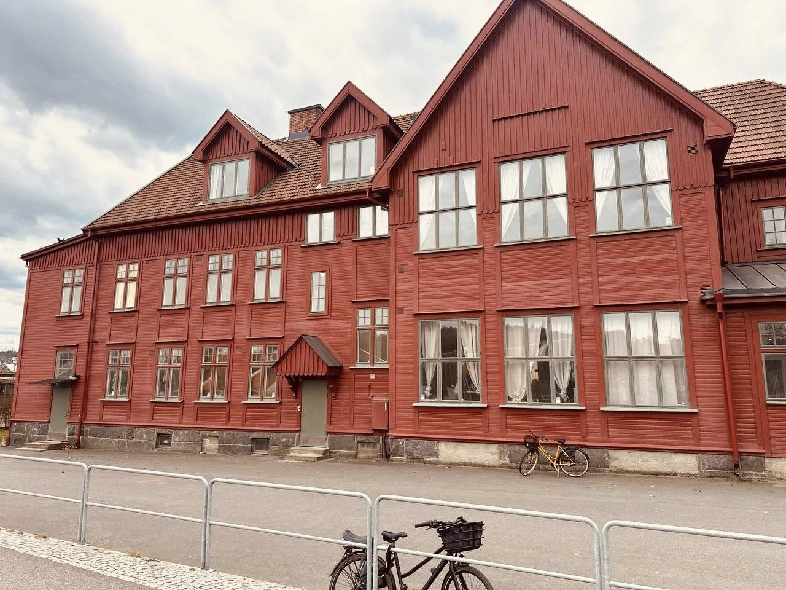

InsideOutWe hold space for human evolution – from the inside out.
Across generations, individually and collectively.
Inside Out began in humanitarian work. Four years in conflict zones taught us how outer crises reshape the inner landscape — fragmenting clear thought, genuine connection, and the capacity to act together.
We were founded to work directly with that. Sustainable change asks for inner development and systemic, structural work — not one or the other, but together.
Our practice draws across psychology, neuroscience, psychosocial work, and social innovation — strengthening the capacities to navigate complexity, hold relationships, and contribute to resilient communities.
The Living
Room.
Our first physical space — Nordost, Gothenburg.

Open. Accessible.
We host talks, workshops, seminars, and experiential programs. Members — individuals, professionals, and organisations — can initiate their own activities and co-create the space.
The foundation of everything Inside Out does — and a beginning.
The model is built to grow.
Another room.
Another neighbourhood.
Another city.
It starts here.
In a living room · Gothenburg · 2026
Three
domains.
Each holds the whole.
Next Generation.
Children and youth — where foundations are built.
Safe contexts where children grow emotional regulation, cooperation, and belonging — through creative activities, movement, and group processes.
Personal Evolution.
The individual and their inner architecture.
Spaces for adults to understand themselves more deeply, process experience, and build a more conscious life — drawing on neuroscience, psychology, physiology, and somatic healing. Accessible to all, not only those who can afford private sessions. Conscious leadership programmes also live here.
Connected Society.
The collective — how we are interconnected.
What happens between people and in groups — intergenerational encounters and projects across generations, cultures, and experiences. In Gothenburg and beyond.
Participate.
Held by many.
Member.
Become a formal part of the NGO. A way to support the work, stay close through our communications, and remain part of programmes where membership is required to continue.
Become a member →Funder.
Support the work as a donor or funder. The Living Room is the first of many spaces; growing asks for committed support over time.
Give →